Election results: Fedora 24 - 2016
Overview
Below are the results of the election Fedora 24 from 2016.
| Name | Votes | Image | ||
|---|---|---|---|---|
| 1 | Aurora over Iceland | 107 |

|
Author: Helena Bartosova License: CC-BY-SA |
| 2 | Sunrise in Florida II | 79 | 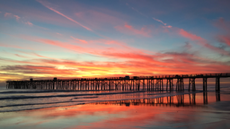 |
Author: afsilva License: CC-BY-SA |
| 3 | old railroad | 77 |

|
Author: nask0 License: CC-BY-SA |
| 4 | Jellyfish | 76 |

|
Author: Allan Lyngby Lassen License: CC-BY-SA |
| 5 | Lady Musgrave Blue | 75 |

|
Author: Lyle Wang License: CC-BY-SA |
| 6 | Argentina Glacier | 72 |

|
Author: wesleyotugo License: CC0 |
| 7 | Paisaje | 70 |

|
Author: diegoestrada License: CC0 |
| 8 | Iceberg in greenland | 70 | 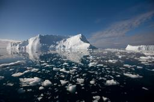 |
Author: lhirlimann License: CC-BY-SA |
| 9 | Tree in Winter | 65 | 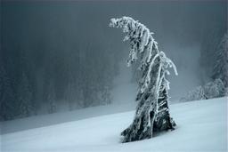 |
Author: Franz Dietrich License: CC-BY-SA |
| 10 | Ice Lake | 62 |

|
Author: Oscar Osta License: CC-BY-SA |
| 11 | mistogan | 61 |
Author: espasmo License: CC0 |
|
| 12 | By the lake | 58 | 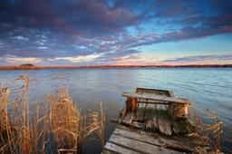 |
Author: http://zoommyapp.com License: CC0 |
| 13 | Blue Deep | 57 | 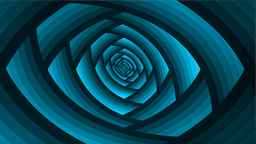 |
Author: alyaj2a License: Free Art |
| 14 | zen | 54 |

|
Author: hhlp License: CC-BY-SA |
| 15 | Morning Dew on Leaves | 53 |

|
Author: sethtrei License: CC-BY-SA |
| 16 | waves | 52 |

|
Author: ali4129 License: CC-BY-SA |
| 17 | Tramandaí at Sunset | 51 |

|
Author: mativi License: CC-BY-SA |
| 18 | Forêt moussue | 50 |

|
Author: zedraken License: CC-BY |
| 19 | Prague riverfront from the Charles Bridge | 50 | 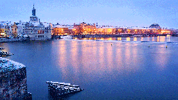 |
Author: Helena Bartosova License: CC-BY-SA |
| 20 | Sky on fire | 48 | 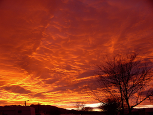 |
Author: thegrendel License: CC-BY-SA |
| 21 | Scabiosa | 47 |

|
Author: siggiph License: CC-BY-SA |
| 22 | Deep in CERN | 46 |
Author: Lukas Kotek License: CC-BY-SA |
|
| 23 | Laxey Aquaduct | 45 |

|
Author: arehtykitna License: CC-BY-SA |
| 24 | Leaf Litter in Guelph, Ontario | 45 | 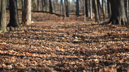 |
Author: Ryan Hodnett License: CC-BY-SA |
| 25 | Sunrise at the Lake | 44 | 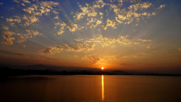 |
Author: Vineet Tuli License: CC-BY-SA |
| 26 | To wherever Fedora takes me | 42 |

|
Author: damonh License: CC-BY-SA |
| 27 | Aurlandsfjord | 40 | 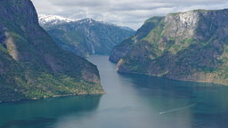 |
Author: helari License: CC-BY-SA |
| 28 | Toulouse, la Garonne | 40 |

|
Author: Ludovic Hirlimann License: CC-BY-SA |
| 29 | Umbrella Street | 39 |

|
Author: footvaalvica License: CC-BY-SA |
| 30 | Blue Summer's Morning | 39 |

|
Author: rtlines License: CC-BY |
| 31 | Munich Alps | 37 | 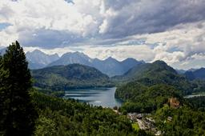 |
Author: wesleyotugo License: CC0 |
| 32 | Le Vieux-Port de Bastia | 36 |

|
Author: rluzynski License: CC-BY-SA |
| 33 | Roman Stadium in Plovdiv | 34 | 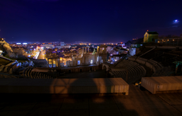 |
Author: nask0 License: CC-BY-SA |
| 34 | Ladybug | 33 |

|
Author: StB License: CC-BY |
| 35 | outback dawn | 32 |

|
Author: Christoph Birkenhauer License: CC-BY-SA |
| 36 | Hovering Gannet | 32 |

|
Author: Michel Matton License: CC-BY-SA |
| 37 | StoneWallPaper | 32 | 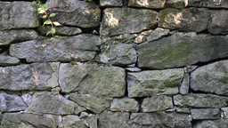 |
Author: davevad License: CC-BY-SA |
| 38 | Common Wheat | 31 |

|
Author: Hubert Ślósarski License: CC-BY-SA |
| 39 | Urban walking | 30 |
Author: Luca Ciavatta License: CC-BY-SA |
|
| 40 | Esperance, Western Australia | 30 |

|
Author: siggiph License: CC-BY-SA |
| 41 | Isle of Man | 29 | 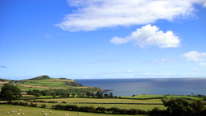 |
Author: arehtykitna License: CC-BY-SA |
| 42 | Long tailed boat | 29 |

|
Author: bruce89 License: CC-BY-SA |
| 43 | Lighthouse | 29 |

|
Author: xoon License: CC-BY-SA |
| 44 | RedBud13 | 29 |

|
Author: mymaestro License: CC0 |
| 45 | fortress | 28 | 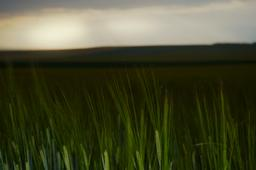 |
Author: Rene Reichenbach License: Free Art |
| 46 | Fishing Nets | 27 |

|
Author: Christoph Böhme License: CC-BY-SA |
| 47 | clearwater pass | 27 |

|
Author: sscheider License: CC0 |
| 48 | After the Storm | 27 |

|
Author: Graziano Capelli License: CC-BY-SA |
| 49 | Chia seeds | 26 |

|
Author: Allan Lyngby Lassen License: CC-BY-SA |
| 50 | Stow Snow | 26 |

|
Author: zeroping License: CC0 |
| 51 | Sunset Canoe | 26 |

|
Author: Lyle Wang License: CC-BY-SA |
| 52 | Sicilian Mountain Village | 24 |

|
Author: Miguel Virkkunen Carvalho License: CC-BY |
| 53 | Spring | 24 | 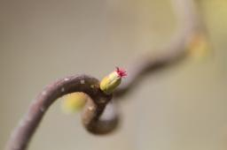 |
Author: sbechter License: CC-BY-SA |
| 54 | Tasty Summer | 23 | 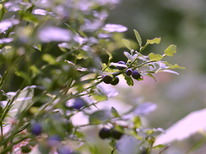 |
Author: Aleksandar Dimitrov License: CC-BY-SA |
| 55 | Face of supercar | 23 |

|
Author: Luya Tshimbalanga License: CC-BY-SA |
| 56 | Sun Set at Dambulla | 23 | 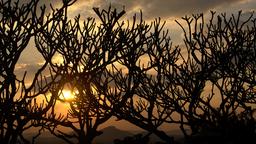 |
Author: Kasun Chathuranga License: CC-BY-SA |
| 57 | Sunrise on the beach | 22 |

|
Author: Luca Ciavatta License: CC-BY-SA |
| 58 | No tulips no spring | 22 | 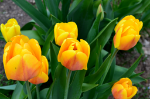 |
Author: robyduck License: CC-BY-SA |
| 59 | blue | 21 |
Author: Christoph Birkenhauer License: CC-BY-SA |
|
| 60 | Trees | 21 | 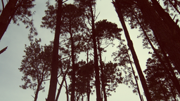 |
Author: mativi License: CC-BY-SA |
| 61 | Bright sky | 20 |

|
Author: tonet666p License: CC-BY-SA |
| 62 | Curious Bear | 20 | 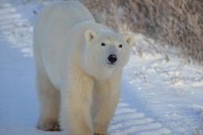 |
Author: jzb License: CC-BY-SA |
| 63 | Sunrise in Florida | 19 |

|
Author: afsilva License: CC-BY-SA |
| 64 | Nubes y Lago | 19 |

|
Author: elrengo License: CC-BY-SA |
| 65 | Suspicious Pelican | 19 | 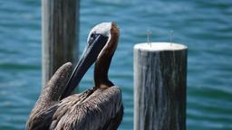 |
Author: octus License: CC-BY-SA |
| 66 | Mountain Sunshine | 19 |

|
Author: rtlines License: CC-BY |
| 67 | Fungus in Algonquin Provincial Park | 18 |

|
Author: Ryan Hodnett License: CC-BY-SA |
| 68 | Components | 17 |

|
Author: Tamás Lévai License: CC-BY-SA |
| 69 | Horse-Chestnut | 17 | 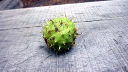 |
Author: Hubert Ślósarski License: CC-BY-SA |
| 70 | Sunset in the sky | 17 |

|
Author: lbazan License: CC-BY-SA |
| 71 | Twilight in Tennessee | 17 |

|
Author: Stuart Campbell License: CC-BY |
| 72 | Butterflies | 16 |

|
Author: Alex Ojeda License: CC0 |
| 73 | Hongos | 16 |

|
Author: damonh License: CC-BY-SA |
| 74 | Coucher de soleil et roseaux | 16 | 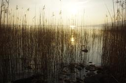 |
Author: zedraken License: CC-BY |
| 75 | After Snow | 16 |

|
Author: Jane Manchun Wong License: CC-BY-SA |
| 76 | Cosquín River | 16 | 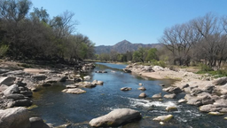 |
Author: lbazan License: CC-BY-SA |
| 77 | Bird | 15 | 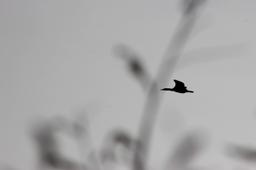 |
Author: mwesterink License: CC-BY-SA |
| 78 | Bighorn Mountain Sheep | 15 | 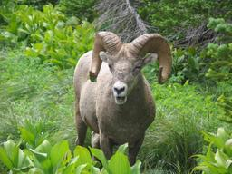 |
Author: sirbuba License: Free Art |
| 79 | Balinese Sunset | 15 |

|
Author: bruce89 License: CC-BY-SA |
| 80 | Niagara | 15 | 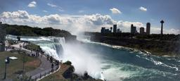 |
Author: sgallagh License: CC-BY-SA |
| 81 | Light at the end of forgotten | 14 |

|
Author: grundblom License: CC-BY-SA |
| 82 | Red Tree | 14 |

|
Author: kotviktorya License: CC-BY-SA |
| 83 | dawn | 14 |

|
Author: motoskov License: CC-BY-SA |
| 84 | Leaves and Dew | 14 | 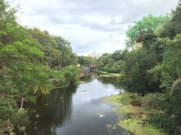 |
Author: sethtrei License: CC-BY-SA |
| 85 | Fall has arrived | 13 |

|
Author: pingou License: CC-BY |
| 86 | Flower | 13 |

|
Author: Alex Ojeda License: CC0 |
| 87 | Vyazovka | 12 | 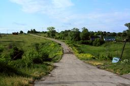 |
Author: kotviktorya License: CC-BY-SA |
| 88 | Winter Afternoon in Georgia | 12 |

|
Author: jflory7 License: CC-BY-SA |
| 89 | Portobelo | 12 |

|
Author: wolnei License: CC-BY-SA |
| 90 | Views along the River Nile | 12 |

|
Author: Michael Gwyther-Jones License: CC-BY |
| 91 | Sunrise on LCA2016 | 12 | 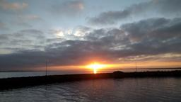 |
Author: Randall Crook License: CC0 |
| 92 | Sanderling in Flight | 11 |

|
Author: creative ilk License: CC-BY-SA |
| 93 | Verano | 11 | 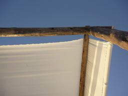 |
Author: muadib License: CC-BY |
| 94 | the leaves behind the tree | 11 |

|
Author: akun License: CC-BY-SA |
| 95 | Wheelbarrow in Leaves | 11 | 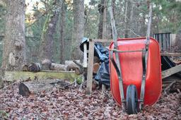 |
Author: jflory7 License: CC-BY-SA |
| 96 | Sunset at Margarita's island | 11 |

|
Author: x3mboy License: CC-BY-SA |
| 97 | wave | 11 |

|
Author: motoskov License: CC-BY-SA |
| 98 | A walk in Geelong. | 11 | 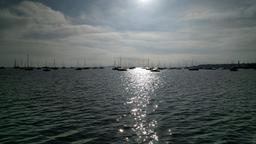 |
Author: Randall Crook License: CC0 |
| 99 | Night in the day | 10 |

|
Author: dustin License: CC-BY-SA |
| 100 | Neusa | 10 |

|
Author: GuruRea License: CC-BY-SA |
| 101 | On the edge | 9 | 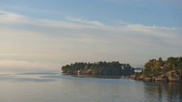 |
Author: helari License: CC-BY-SA |
| 102 | Playa Venao | 9 |

|
Author: potty License: CC-BY-SA |
| 103 | Branches | 9 |

|
Author: artchizhov License: CC-BY |
| 104 | Cherries in the spring | 9 | 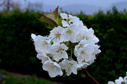 |
Author: robyduck License: CC-BY-SA |
| 105 | Succulent Plants (Santa Barbara Zoo) | 9 |

|
Author: Mat Marshall License: CC-BY-SA |
| 106 | Brown Butterfly | 9 | 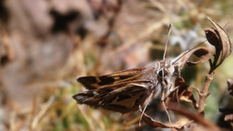 |
Author: renne License: CC-BY-SA |
| 107 | Kansas Corn | 9 | 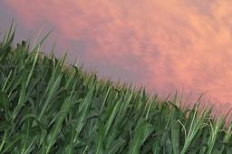 |
Author: dustin License: CC0 |
| 108 | Olecko lake in the evening | 8 | 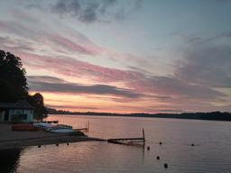 |
Author: Marcin 'hrw' Juszkiewicz License: CC-BY-SA |
| 109 | The Bird | 8 | 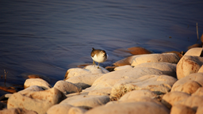 |
Author: Vineet Tuli License: CC-BY-SA |
| 110 | Rain horizon | 8 | 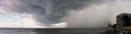 |
Author: wolnei License: CC-BY-SA |
| 111 | Sunset 06 | 7 |

|
Author: thegrendel License: CC-BY-SA |
| 112 | Thames Life | 7 | 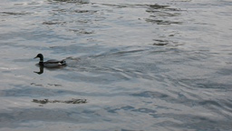 |
Author: fale License: CC-BY-SA |
| 113 | PearBloom18 | 7 | 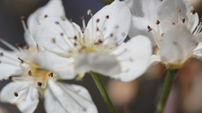 |
Author: mymaestro License: CC0 |
| 114 | White Flowers 2 | 7 | 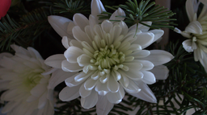 |
Author: grundblom License: CC-BY-SA |
| 115 | Glimpse of Autumn | 6 | 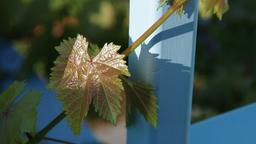 |
Author: Graziano Capelli License: CC-BY-SA |
| 116 | White Flowers | 6 | 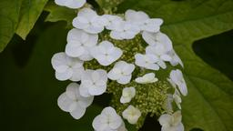 |
Author: octus License: CC-BY-SA |
| 117 | Livorno Sunrise | 5 |

|
Author: rluzynski License: CC-BY-SA |
| 118 | Waterland | 5 |

|
Author: gjanssens License: CC0 |
| 119 | Olives | 5 |

|
Author: Jonathan Dieter License: CC-BY-SA |
| 120 | Grotta Poesia Detail | 5 |

|
Author: barondem License: CC-BY-SA |
| 121 | Barquisimeto's Landscape | 4 | 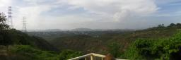 |
Author: x3mboy License: CC-BY-SA |
| 122 | Little spring green | 4 | 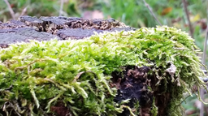 |
Author: gjanssens License: CC0 |
| 123 | Insecto_en_hombro | 3 |

|
Author: srkraken License: CC-BY-SA |
| 124 | A job well done with the contribution of all ...... | 2 |

|
Author: bernardoha License: CC-BY |
{kind=link}
{kind=link}
{kind=link}
{kind=link}
{kind=link}
{kind=link}
{kind=link}
{kind=link}
{kind=link}
{kind=link}
{kind=link}
{kind=link}
{kind=link}
{kind=link}
{kind=link}
{kind=link}
{kind=link}
{kind=link}
{kind=link}
{kind=link}
{kind=link}
{kind=link}
{kind=link}
{kind=link}
{kind=link}
{kind=link}
{kind=link}
{kind=link}
{kind=link}
{kind=link}
{kind=link}
{kind=link}
{kind=link}
{kind=link}
{kind=link}
{kind=link}
{kind=link}
{kind=link}
{kind=link}
{kind=link}
{kind=link}
{kind=link}
{kind=link}
{kind=link}
{kind=link}
{kind=link}
{kind=link}
{kind=link}
{kind=link}
{kind=link}
{kind=link}
{kind=link}